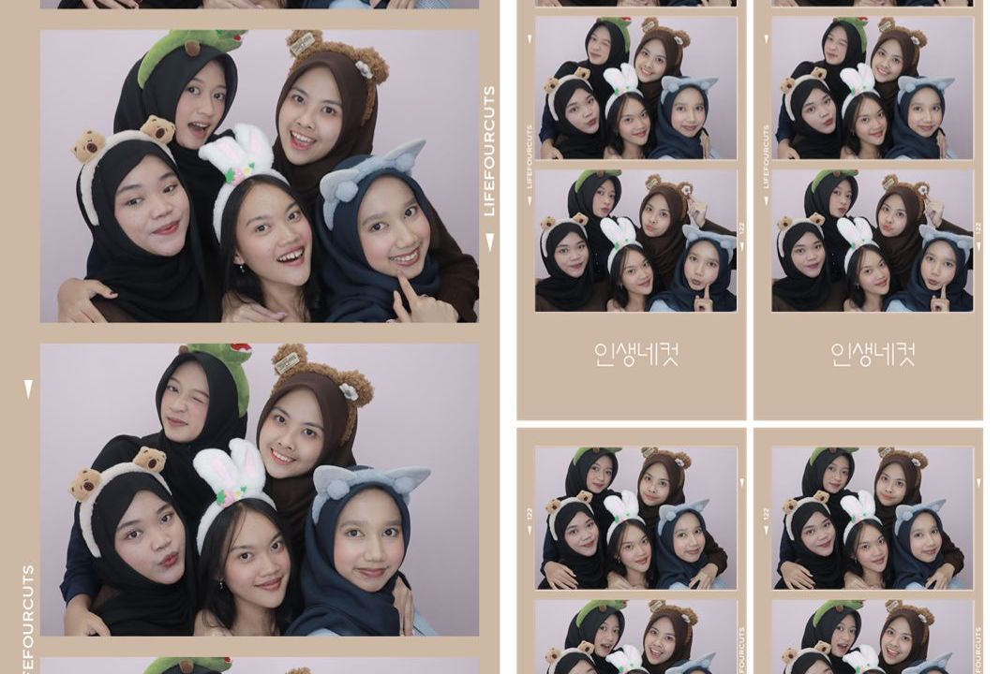
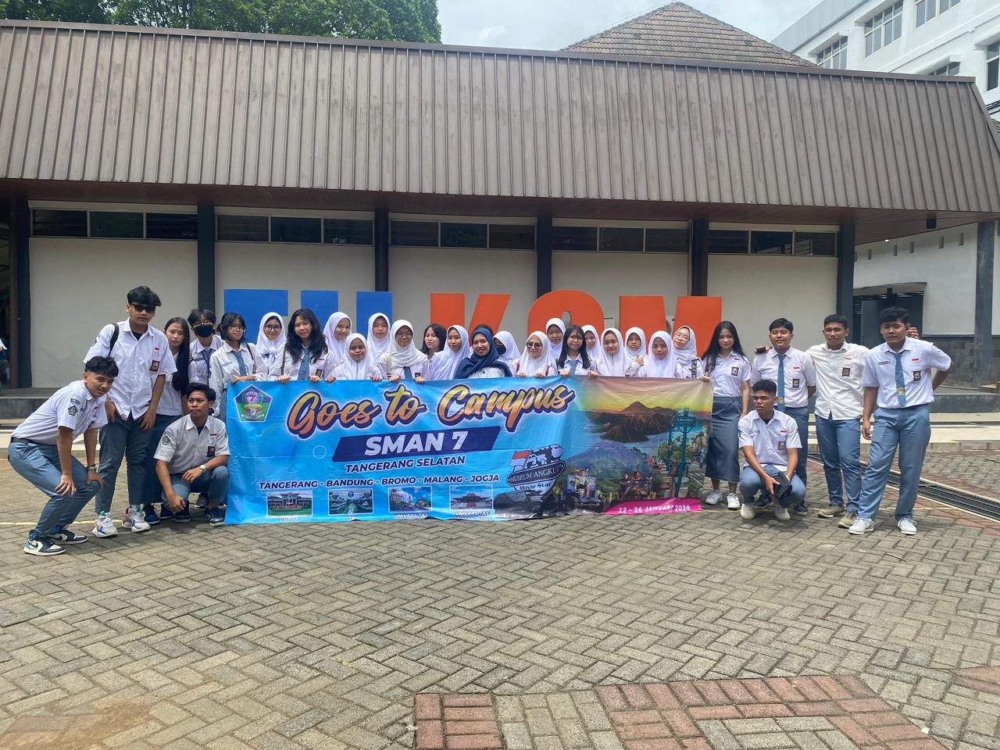
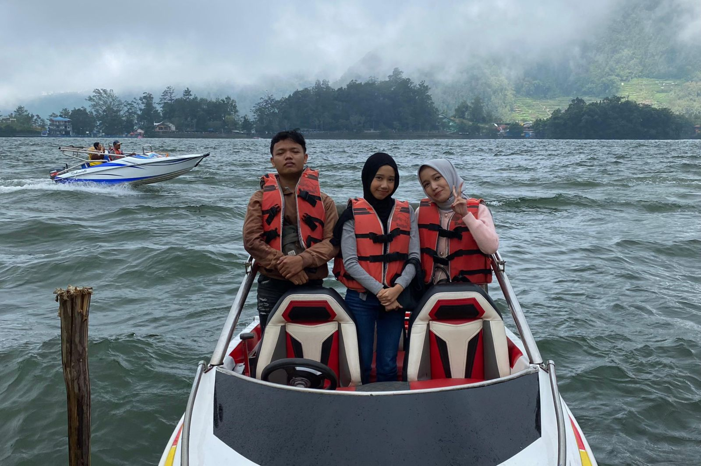
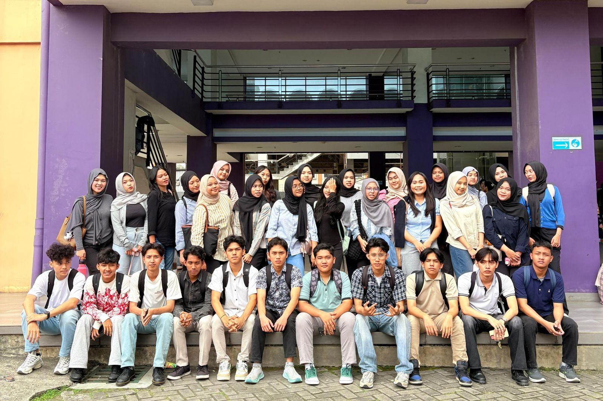
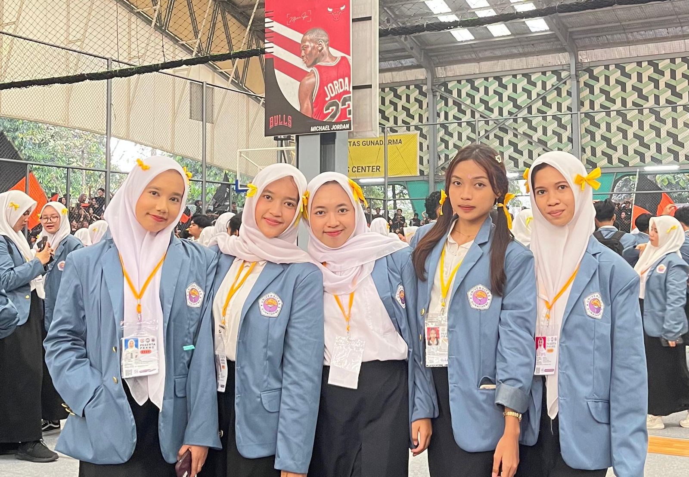
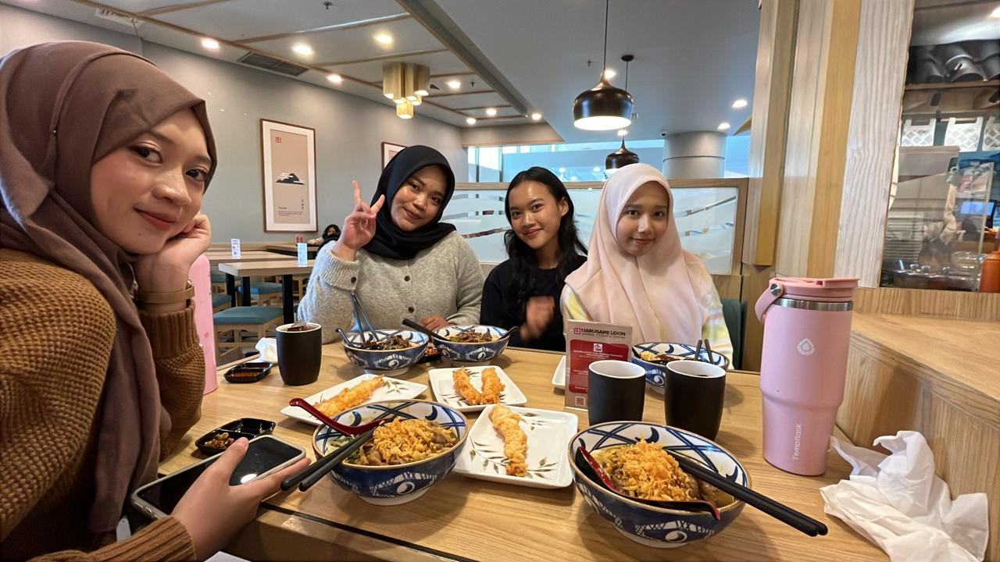
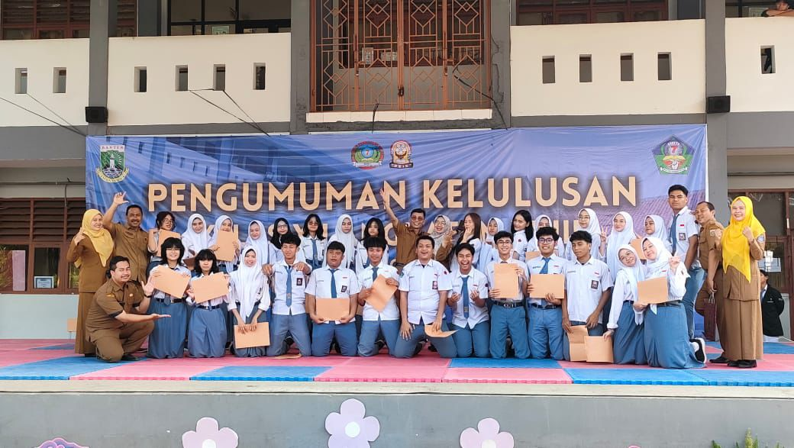

Saat Libur Kuliah Aku dan teman - teman pergi bermain ke Playtopia.
Aku naik kereta dari Stasiun Rawabuntu, dari rumah aku naik gojek.
Setelah selesai main di Playtopia, kita photobooth dan makan sore.
Habis itu aku dan teman - teman berpisah saat naik KRL, setelah menaiki KRL aku pulang menggunakan gojek sedangkan teman - teman pulang menggunakan kendaraan masing-masing.

GOES TO CAMPUS
Saat SMA sekolah aku mengadakan Goes To Campus.
Aku mengunjungi beberapa Kampus dan ke tempat wisata.
Aku mengunjungi Universitas Padjajaran, Institut Teknologi Bandung, Gadjah Mada, Brawijaya.
Setelah mengunjungi Kampus, keesokannya kami melanjutkan ke tempat wisata salah satunya Bromo dan tempat wisata lainnya.

SERUNYA DI TELAGA SARANGAN
Saat libur Lebaran aku dan keluarga memutuskan mudik ke kampung halaman.
Sesampainya tiba di kampung, aku disambut mbah dan keluarga disana.
Saat di kampung aku berlibur ke Telaga Sarangan bersama keluarga.
Aku sangat menikmati liburan disana.

FIRST DAY KULIAH
Pertama kaliaku masuk Kuliah aku sangat senang bisa membuka lembaran baru.
Saat pertama kali aku berangkat ke kampus aku diantar oleh orang tua ku .
Saat tiba di kampus aku banyak berkenalan dengan teman baru.
Aku sangat senang karena ruang lingkup pertemanannya baik.

PKKMB
Saathari PPKMB tiba aku sangat gugup.
Aku berangkat ke kampus Depok diantar oleh orang tua ku .
Saat tiba di kampus aku banyak bertemu dengan teman baru.
Aku sangat senang karena acara PPKMB sangat seru.

BERMAIN KE SMS
Setelah Selesai kuliah, aku dan teman - teman merencanakan pergi ke Summarecon Mall Serpong.
Kita kesana menggunakan kendaraan sepeda motor.
Setelah sampai kita langsung makan di Marugame Udon.
Habis itu kita pulang menggunakan kendaraan masing-masing.

PENGUMUMAN KELULUSAN SMA
Saat Wisuda SMA saya dan teman-teman perpisahan di sekolah.
Kita foto Bersama dan menonton pentas seni adik kelas.
Setelah itu saya mendapatkan surat kelulusan dan nilai akhir.

KUNJUNGAN KE YAYASAN SAYAP IBU
Saat SMA saya dan teman sekelas saya pernah pergi ke Yayasan Sayap Ibu Bintaro.
Disana saya melukis di gypsum Bersama teman-teman yang ada disana.
Kami melihat banyak bagian-bagian ruangan yang ada disana.
Saya senang ada disana, semoga mereka selalu sehat dan bahagia selalu.
FOTO ANGKATAN SMA
Saat kelulusan SMA aku dan teman teman foto satu angkatan.
Kami memulai acara jam 4 sore.
Sesi foto sangat berkesan.
PLAYLANDIA
Aku dan kedua teman ku pergi bermain ke Playlandiasetelah ujian sekolah selesai
Disana kami mencoba semua permainan yang ada.
Kami tertawa bersama dan saling menantang untuk mencoba wahana yang lebih seru.